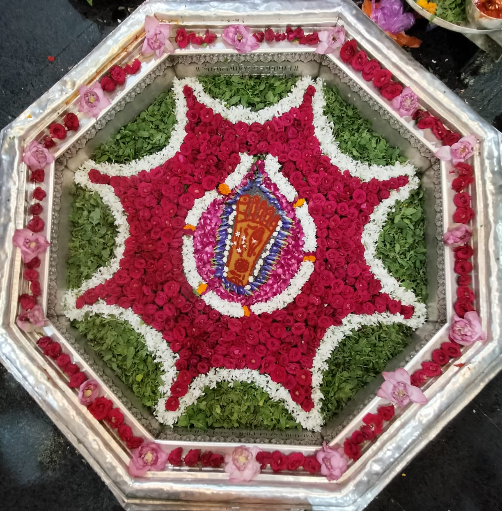
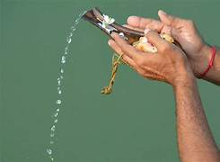
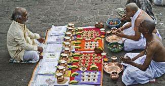
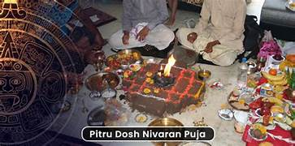
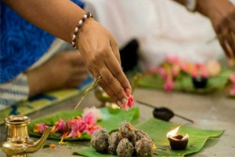
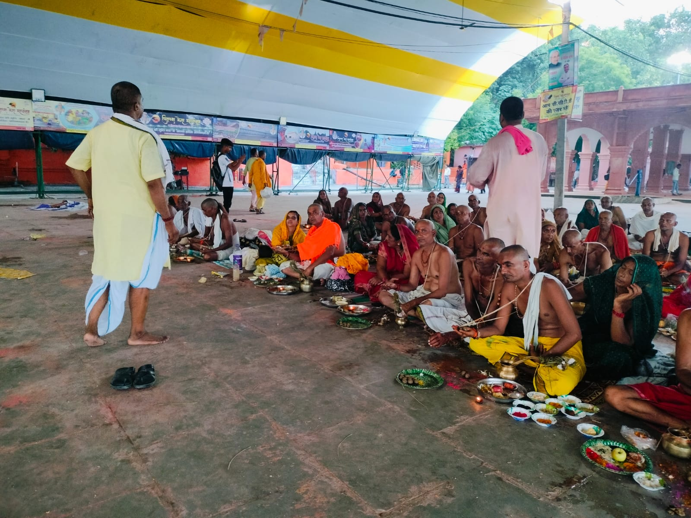
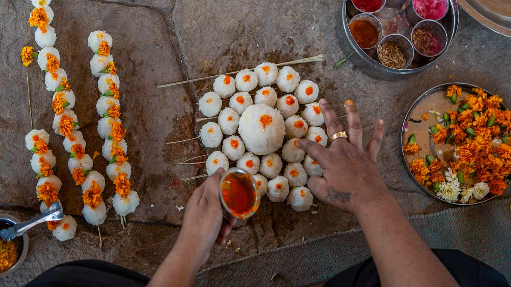

Tirpindi Shradh and Just After Death Only 11th & 12th Days Karm
Antyesti Karmkand

Vishnu Pad: The Sacred Footprint of Lord Vishnu
The Vishnupad Temple, located in the Gaya district of Bihar, India, is a revered Hindu
temple dedicated to Lord Vishnu. Its significance is deeply rooted in religious, historical, and
architectural realms, making it a pivotal site for devotees and scholars alike.Religious Significance:
The temple is named after the footprint (pad) of Lord Vishnu, which is enshrined in the temple on a
basalt rock, believed to be where Vishnu killed the demon Gayasur by placing his foot on his chest. This
footprint is the focal point of worship, and the temple attracts thousands of devotees who come to offer
pind-daan, a ritual to honor the souls of deceased ancestors. The Vishnupad Temple is especially
significant during the Pitru Paksha, a 16-day period in the Hindu lunar calendar when Hindus perform
rituals for their ancestors. It is believed that performing pind-daan at this temple ensures the
liberation of the soul from the cycle of birth and death, granting it eternal peace.Historical
Importance: The Vishnupad Temple has a rich historical background, with references to its existence
dating back to ancient scriptures and epics. It is mentioned in the Puranas and the Mahabharata,
highlighting its long-standing importance in Hinduism. The present structure of the temple was built by
Queen Ahilyabai Holkar of Indore in the 18th century, although it is believed that the original temple
dates back much earlier. The temple’s continuous patronage by various dynasties and rulers underscores
its enduring significance across different historical periods.Architectural Marvel: Architecturally, the
Vishnupad Temple is an exquisite example of the Nagara style, characterized by its lofty spires
(shikharas) and intricate carvings. The temple stands on the banks of the sacred Falgu River, adding to
its serene and spiritual ambiance. The central sanctum houses the footprint of Vishnu, surrounded by an
octagonal pavilion supported by beautifully carved pillars. The intricate sculptures and motifs adorning
the temple walls depict scenes from Hindu mythology, showcasing the artistry and craftsmanship of the
era.Cultural Impact: The Vishnupad Temple is not just a religious landmark but also a cultural hub. It
has inspired numerous literary and artistic works over the centuries, becoming a symbol of the region’s
rich cultural heritage. The temple's festivals, rituals, and fairs attract pilgrims and tourists from
all over India and beyond, fostering a sense of community and cultural exchange.Conclusion: In summary,
the Vishnupad Temple in Gaya district stands as a testament to India's rich religious traditions,
historical depth, and architectural brilliance. Its significance transcends mere religious practices,
embodying the cultural and spiritual ethos of Hinduism. For devotees, the temple is a sacred space where
faith and tradition converge, offering solace and spiritual fulfillment. For historians and architects,
it is a treasure trove of historical narratives and architectural beauty. The Vishnupad Temple, with its
profound legacy, continues to be a beacon of devotion and a vital part of India's cultural landscape.
At a distance of 4 km from Gaya Junction Railway Station, and 10 km from Bodhgaya Bus
Station, Vishnupad Mandir is a Hindu temple located in the city of Gaya, Bihar. It is one of the ancient
sacred temples in Gaya and among the well-known places to visit as part of the Bodhgaya Tour Packages.
Situated on the banks of Falgu River, Vishnupad Temple is dedicated to Lord Vishnu.According to the
historical records, the existence of the Vishnupad temple goes back to the period of Samudragupta, who
ruled over a vast empire during the 5th Century CE.The inscriptional source for this evidence is based
on the Basarh Seal discovered in Vaishali.Further evidence is found in the Mehrauli Pillar inscription
of King Chandragupta II.The inscription mentions this King as a devotee of Lord Vishnu and records the
installation of 'dhvaja' or pillar of Vishnu on the Vishnupad Hill.A 9th - century inscription
commemorates the dedication of a house for ascetics at Vishnupad by the Pala king Narayanapala.A record
dated 1058 CE mentions that Vishvarupa, the ruler of Gaya built the Gadadhara temple, which forms part
of the Vishnupad temple complex.Though the origin of the temple is unknown, the present octagonal
structure was built by Rani Ahilya Bai Holkar, the queen of Indore, in 1787. The Vishnupad temple is
said to be the exact site where Lord Vishnu had pressed his feet on Gayasura's body, leaving the imprint
of his feet on the rocky surface. According to the legend, a demon named Gayasura attained the boon
after a heavy penance. According to the boon, anyone who looked at him can attain salvation. Due to this
indiscriminate action, the concept of Karma and its effect was becoming redundant. To prevent this, Lord
Vishnu pushed Gayasura below the surface of the earth by placing his foot on his chest. Gayasur adjured
him for food, Vishnu then said that he will not die of hunger and whoever will offer him food will get
salvation. Hence, this is the reason why people go there to do 'Pind - Daan' of their loved ones. It is
believed that the day Gayasur doesn't get his food will be the day of his return to the world.The
imprint of Lord's foot, measuring 40 cm in length, is visible in the temple and pilgrims worship it
daily. The temple's architecture is influenced by the Shikara style. The core part of the temple
consists of the main shrine with a tall Vimana, 100 feet high, and a pillared Mandapa. The Shrine faces
east and the interior is octagonal in shape. As the name suggests that the temple houses about 40 cm
long footprint of Lord Vishnu known as Dharmasila that is enclosed by a basin made of silver plates.
This footprint also has various symbols that are associated with the attributes such as conch, disc, and
mace of Lord Vishnu. Also, the temple houses shrines of deities like Lord Narasimha and Lord Shiva. A
special fair takes place on the premises of the temple in the month of Pitripaksha.Pitripaksha is a time
when Hindus pay respects to their ancestors, especially with food offerings.During Pitripaksha, a Pind
Daan by family members of the dead soul is fruitful.

Tarpan: The Sacred Act of Gratitude
The term 'Trup' represents a person's ability to bring joy
and
satisfaction to others.
Derived from this, ‘Tarpan’ is the sacred act of offering water as a gesture of respect
to God, revered sages, ancestral spirits, and humanity itself. Through Tarpan, we seek to honor and
bring peace to these beings.
The ritual of Tarpan is a heartfelt invocation, aiming to receive blessings and
fulfillment from the
Divine, our forebears, and the sacred energies called upon, bestowing peace and contentment on all who
participate.
Varshik Shraddha (श्राद्ध्)

Shraddha is a reverent offering made to honor and remember departed ancestors. It is believed that the
souls (Atma) of our forefathers journey to higher realms, yet remain connected to their earthly
descendants. To express gratitude and seek blessings, family members offer prayers and sustenance to
these departed souls.
The ritual of Shraddha Karma—or simply Shradh—is traditionally observed each year on the lunar date of a
parent’s passing, as per the Hindu Panchangam. This annual remembrance, also known as Samvatsarabdika or
Varshabdika, strengthens the spiritual bond across generations and brings peace to the departed.
Pitru Dosh Nivaran Puja
पितृ दोष निवारण पूजा

Understanding Pitru Dosh
पितृ दोष को समझना
Pitru Dosh is believed to arise when certain ancestral rites—such as Shradha or Pind
Daan—are left incomplete, leaving the souls of our ancestors unfulfilled. This discontent can
cast a shadow of unresolved karma on the family, manifesting as issues like financial hardships, health
challenges, and relationship struggles. Performing the Pitru Dosh Nivaran Puja helps in
appeasing these souls, clearing the dosha from the family’s horoscope, and bringing harmony and
abundance back into life.
ऐसा माना जाता है कि पितृ दोष तब उत्पन्न होता है जब कुछ पूर्वज अनुष्ठान—जैसे श्राद्ध या पिंडदान—अधूरे रह
जाते हैं, जिससे हमारे पूर्वजों की आत्माएं असंतुष्ट हो जाती हैं। यह असंतोष परिवार पर अनसुलझे कर्म की छाया
डाल सकता है, जिससे वित्तीय कठिनाइयाँ, स्वास्थ्य समस्याएँ और संबंधों में संघर्ष जैसे मुद्दे उत्पन्न हो
सकते हैं। पितृ दोष निवारण पूजा इन आत्माओं को शांत करने, परिवार के कुंडली से दोष को दूर करने और जीवन में
समृद्धि और सामंजस्य वापस लाने में सहायक होती है।
Why Perform Pitru Dosh Nivaran Puja in Gaya?
गया में पितृ दोष निवारण पूजा क्यों करें?
Gaya holds a sacred reputation for performing ancestral rites, including Pind Daan and
Pitru Dosh Nivaran Puja. The city is seen as a gateway to Moksha (liberation), with the Phalgu
River known for bestowing blessings from Lord Vishnu. Conducting this puja here is believed to bring
divine blessings, peace, prosperity, and a lasting release from ancestral karma for the family.
गया में पिंडदान और पितृ दोष निवारण पूजा जैसे पूर्वज अनुष्ठानों के लिए एक पवित्र प्रतिष्ठा है। शहर को
मोक्ष (मुक्ति) का द्वार माना जाता है, जहां फल्गु नदी भगवान विष्णु की कृपा का प्रतीक है। यहाँ पूजा करने
से परिवार के लिए दिव्य आशीर्वाद, शांति, समृद्धि और पूर्वज कर्म से मुक्ति प्राप्त होती है।
Benefits of Pitru Dosh Nivaran Puja in Gaya
गया में पितृ दोष निवारण पूजा के लाभ
Liberation of Ancestors: The primary purpose of the puja is to help your ancestors
attain Moksha, freeing them from earthly attachments.
Family Harmony: This ritual can dissolve familial tensions, restoring happiness and
tranquility within the home.
Health and Longevity: Alleviating Pitru Dosh is said to improve the well-being and
lifespan of family members.
Financial Prosperity: Ancestral blessings foster financial stability, growth, and
abundance.
Protection: With the removal of karmic obstacles, you and your family are guarded
from negative influences and energy.
पूर्वजों की मुक्ति: पूजा का मुख्य उद्देश्य आपके पूर्वजों को मोक्ष प्राप्त करने में
मदद करना है, जिससे वे सांसारिक बंधनों से मुक्त हो सकें।
परिवार में सामंजस्य: यह अनुष्ठान पारिवारिक तनावों को कम कर सकता है, घर में खुशी और
शांति लौटाता है।
स्वास्थ्य और दीर्घायु: पितृ दोष को कम करने से परिवार के सदस्यों के स्वास्थ्य और
जीवनकाल में सुधार होता है।
आर्थिक समृद्धि: पूर्वजों के आशीर्वाद से आर्थिक स्थिरता, विकास और समृद्धि मिलती है।
सुरक्षा: कर्म संबंधी बाधाओं के हटने से आप और आपका परिवार नकारात्मक प्रभावों और
ऊर्जा से सुरक्षित रहता है।
Narayan Bali Puja: A Path to Ancestral Healing in Gaya

What is Narayan Bali Puja?
The Narayan Bali Puja is an ancient Hindu ritual, particularly revered for its
power to cleanse the effects of Pitru Dosha, an ancestral curse. This puja is believed to
address issues arising from untimely deaths, which can bring an imbalance to a family’s energy and
impact descendants with challenges in life.
Why Perform Narayan Bali Puja in Gaya?
Known as a powerful spiritual location, Gaya is said to be blessed by Lord Vishnu.
Performing the Narayan Bali Puja here is believed to bring divine blessings, helping families
break free from any unresolved ancestral karma and allowing the spirits of the departed to attain peace.
Gaya’s unique connection to moksha (liberation) makes it the ideal place for performing this
sacred rite.
Benefits of Narayan Bali Puja
Ancestral Peace: Narayan Bali Puja helps departed souls find peace, preventing them
from lingering in the earthly realm.
Family Harmony: By removing Pitru Dosha, the puja brings peace, joy, and prosperity
to the family.
Obstacle Removal: The puja is beneficial for those facing frequent obstacles in
personal and professional lives, believed to alleviate hindrances in health, marriage, and career.
Spiritual Cleansing: It fosters positive spiritual energy, allowing families to
start anew with blessings and divine protection.
Tripindi Shraddh is a sacred ritual performed in memory of our beloved departed souls. When
offerings are not made for three consecutive years, the spirits of the deceased may become restless and
agitated. To soothe these restless souls, families perform this ceremony, ensuring peace and fulfillment
for their ancestors. This ritual holds profound significance, addressing various challenges such as
difficulties in
childbirth, the effects of the evil eye, and helping ancestors attain Moksha (liberation from
the cycle of rebirth).
Antyesti Karmkand: Last Rites

Antyesti Karmkand, or last rites, is a vital Hindu funeral ritual performed after
death,
serving multiple purposes: 1. Purpose: These rituals help the deceased transition to the afterlife while providing
closure to the grieving family. 2. Process: The body is bathed and dressed in specific clothing—white for men and red
for women with living husbands. The eldest son or a designated mourner typically conducts the rites,
which include offering rice or sesame seeds into the mouth of the deceased and lighting the cremation
pyre. 3. Cremation vs. Burial: While cremation is the preferred method, some sects may
practice burial depending on cultural beliefs.
4. Post-Cremation: After cremation, rituals like Tarpana are performed to honor the
deceased, and families often hold a memorial meal a few days later.
5. Cultural Significance: Antyesti fosters community connections and allows
participants
to reflect on their relationships with the deceased, aiding in the grieving process.
Pind Daan & Shradh in Gaya Ji: A Sacred Pilgrimage

Gaya, a city deeply revered by Hindus and Buddhists alike, is a spiritual
beacon in Bihar, India. Also
known as Bodh Gaya, this sacred city lies about 100 kilometers south of Patna and is famously the place
where Gautama Buddha attained enlightenment. For Hindus, Gaya is a vital pilgrimage destination,
especially for performing rituals like Pind Daan, a solemn rite conducted to honor and
bring peace to one's ancestors. Enveloped in greenery, with ancient architecture and narrow streets,
Gaya offers a profound journey for those seeking to connect with tradition and spirituality. Hindi is
the primary language spoken here.
Reaching Gaya
Reaching Gaya is convenient, as the city is well-connected by road, rail, and
air. The Mahabodhi Express,
running between Delhi and Gaya, covers the distance in 16 hours. Gaya is easily accessible from other
major cities, such as Kolkata, Ranchi, Varanasi, and Allahabad. Gaya’s international airport also
provides seasonal connectivity to cities like Colombo, Bangkok, and Singapore, making it accessible for
international pilgrims.
Planning for Pind Daan at Gaya
Ashrams like Bharat Seva Ashram and Bengali
Ashram offer organized
assistance to visitors performing Pind Daan. Arrangements for priests, meals, and accommodations can
often be handled with a simple call a few weeks ahead of your planned visit. Hotels in Gaya can also
assist in securing the services of a knowledgeable priest, ensuring that rituals are performed with the
utmost respect and authenticity.
Accommodations in Gaya
For budget-conscious travelers, ashrams like Bharat Seva Ashram provide basic
accommodations without
frills, making them a popular choice for pilgrims on short visits. Visitors may wish to bring personal
bedding and mosquito repellents. Those seeking more comfortable amenities can choose from various hotels
in Gaya, where options range from economical lodgings to high-end stays.
Gaya’s Sacred and Historic Sites
Beyond its spiritual appeal, Gaya offers a wealth of sites and experiences.
Set on the banks of the
Falgu River, Gaya is home to the famous Vishnupad Temple, where
pilgrims gather to honor their ancestors. Just 14 kilometers from Gaya is Bodh Gaya,
with the sacred Mahabodhi Temple and other significant Buddhist sites, drawing pilgrims
from across the world. Additional sites of interest include Akshayabat, Barabar Caves, Surya
Kund, and Pretshila Hill. Culinary specialties such as Sattu, litti, marua-ka-roti,
baigan-bharta, and pua offer a taste of Gaya's local flavors.
.png)